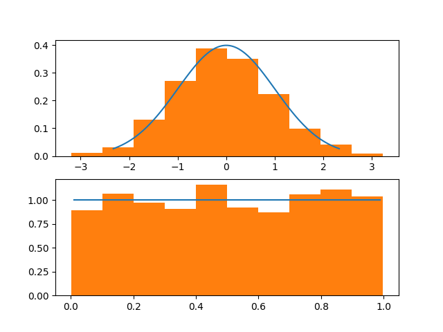

L'ecosistema SciPy¶
Finora abbiamo parlato prevalentemente di NumPy e (soltanto in piccola parte) di Matplotlib. Tuttavia, entrambe queste librerie fanno parte di un ecosistema più ampio per il calcolo scientifico, comprendente anche le librerie SciPy, iPython, Pandas e SimPy. Questo ecosistema è, per l'appunto, chiamato come una delle librerie che lo compongono, che è anche quella di cui tratteremo (giocoforza limitatamente) in questa lezione, ovvero SciPy.
La libreria SciPy¶
La libreria SciPy rappresenta un insieme di algoritmi e funzioni matematiche costruite a partire da NumPy. Tuttavia, come è possibile vedere dalla reference, il numero e la varietà delle funzioni offerte è notevolmente maggiore rispetto a NumPy.
Per iniziare, quindi, procediamo installandola nel nostro ambiente di sviluppo.
==="Pip"
pip install scipy
==="Pipenv"
pipenv install scipy
Nel prosieguo, presupporremo che siano stati già importati NumPy e Matplotlib.
import numpy as np
import matplotlib as mpl
import matplotlib.pyplot as plt
Esempio 1: Distribuzione di probabilità¶
Vediamo come comparare visivamente il valore teorico assunto da due distribuzioni di probabilità "standard" (ovvero la uniforme e la normale) e l'istogramma ottenuto a partire da un elevato numero di elementi generati casualmente ma appartenenti a quella distribuzione.
Useremo questo codice:
from scipy.stats import norm, uniform
x_1 = np.linspace(norm.ppf(0.01), norm.ppf(0.99), 100)
x_2 = np.linspace(uniform.ppf(0.01), uniform.ppf(0.99), 100)
r_1 = norm.rvs(size=1000)
r_2 = uniform.rvs(size=1000)
fig, (ax_1, ax_2) = plt.subplots(2, 1)
ax_1.plot(x_1, norm.pdf(x_1))
ax_1.hist(r_1, density=True)
ax_2.plot(x_2, uniform.pdf(x_2))
ax_2.hist(r_2, density=True)
plt.show()
In primis, importiamo i moduli norm ed uniform del package scipy.stats, che contengono tutto quello di cui abbiamo bisogno per la modellazione delle distribuzioni normali (norm) ed uniformi (uniform).
Successivamente, usiamo la funzione linspace di NumPy, il cui funzionamento è molto simile a range ed arange, ma che restituisce risultati consistenti anche nel caso di uso di step non interi (il che non è sempre garantito con arange). In particolare, genereremo 100 campioni equidistanziati e compresi tra l'1 ed il 99 percentile delle funzioni; per individuare questi valori, usiamo la funzione ppf(p):
x_1 = np.linspace(norm.ppf(0.01), norm.ppf(0.99), 100)
x_2 = np.linspace(uniform.ppf(0.01), uniform.ppf(0.99), 100)
Nota
Intuitivamente, individuare 100 valori compresi tra l'1 ed il 99 percentile significa in pratica modellare la maggior parte dell'intervallo dei valori assunti "normalmente" dalla funzione.
A questo punto, calcoliamo 1000 valori generati casualmente seguendo entrambe le distribuzioni mediante la funzione rvs():
r_1 = norm.rvs(size=1000)
r_2 = uniform.rvs(size=1000)
Per terminare, generemo due subplot, uno relativo alla funzione densità di probabilità normale, ed uno relativo alla funzione densità di probabilità uniforme. Nei subplot, compareremo i valori equispaziati generati in precedenza (x_1 ed x_2) con l'istogramma dei 1000 valori generati casualmente (r_1 ed r_2); ovviamente, ricordiamo di inserire il valore density=True per normalizzare l'istogramma.
Il risultato dovrebbe essere simile a quello mostrato in figura:

Esempio 2: calcolo del determinante e dell'inversa¶
Un altro esempio delle potenzialità offerte da SciPy sta nel calcolo algebrico, che offre molte più funzioni rispetto a quelle presenti in NumPy, specialmente per quello che riguarda la fattorizzazione di matrici.
Per fare un rapido esempio, vediamo come è possibile calcolare il determinante e l'inversa di una matrice.
from scipy import linalg
# ... matrice mat creata sotto forma di array NumPy
# Determinante
d = linalg.det(mat)
# Inversa
i = linalg.inv(mat)
Nota
E' molto semplice otare come la sintassi richiami quella di NumPy e, in realtà, anche il funzionamento sia il medesimo, per cui è possibile usare indifferentemente entrambe le librerie. Dove SciPy "spicca" è in tutte quelle funzioni che non sono presenti in NumPy.
Esempio 3: Trasformata di Fourier¶
SciPy non è limitato al calcolo algebrico e matriciale, e può essere usato, come dicevamo, in molti altri ambiti, come ad esempio il signal processing. Ad esempio, possiamo sfruttarlo per calcolare la trasformata di Fourier di un segnale sinusoidale:
from scipy.fft import fft
x = np.linspace(0., 10, 1000)
y = np.sin(2.0 * np.pi * x)
yf = fft(y)
fig, ax = plt.subplots()
ax.plot(np.abs(yf[0:500]))
plt.show()
Nell'esempio precedente, generiamo 1000 campioni equidistanziati tra 0 e 10, e quindi creiamo il vettore y la cui formula sarà associata a \(f(x) = 2\pi x\). A quel punto, calcoliamo la trasformata di Fourier di y, e ne visualizziamo a schermo il modulo.

Attenzione
Ricordiamo che la trasformata di Fourier è simmetrica. Per questo, visualizzeremo soltanto la prima metà dei valori estratti per il modulo.
Possiamo estendere il precedente esperimento vedendo cosa accade per una somma di seni:
y_tr = np.sin(2.0 * np.pi * x) + np.sin(20 * 2.0 * np.pi * x)
y_trf = fft(y_tr)
ax.plot(np.abs(y_trf[0:500]))
Come si deve dalla figura, avremo come risultato due impulsi:

In ultimo, possiamo valutare anche cosa accade riducendo l'ampiezza di una delle due sinusoidi:
y_tr = np.sin(2.0 * np.pi * x) + 0.5 * np.sin(20 * 2.0 * np.pi * x)
y_trf = fft(y_tr)
ax.plot(np.abs(y_trf[0:500]))

Conclusioni¶
In questa lezione, abbiamo dato una breve panoramica sulle possibilità offerte da SciPy. Nelle prossime, vedremo come funzionano altre due librerie, ovvero iPython e Pandas.